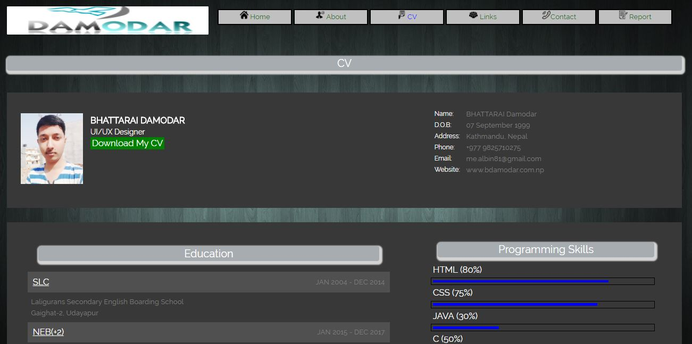

Name : Damodar Bhattarai
UoN ID: 18408446
Github url:- https://bhattarai-damodar.github.io/web/
TABLE OF CONTENT
- Introduction
- My Experience
- UI Design
- Wireframes
- Mockups
- Testing
- References
1. INTRODUCTION
As a project given by University of Northampton. A resume webpage was developed. Several effects were added and eye - friendly colors were used. It is a responsive design as well as mobile friendly. It consists of all the basic requirements like homepage, about, contact, cv and social media links. Coding was started from mobile version and later converted to PC version. It was a challenging task and very time-consuming but it was overcome by the help of team members and internet. I researched a lot in many websites so that I could make this CV website look user-friendly. All the lecture and tutorial classes in the college were very helpful in making this webpage.
The following pages are present in my CV webpage;
1. Homepage: It consists of a image slideshow and few details about me.
2. About me: It tells that how I was inspired to learn web development.
3. CV: It includes my personal details, educations, trainings and skills.
4. Links: It consists of the social media links I am registered to.
5. Contact: It contains a google map of my surrounding and one contact form so that users can contact me.
Github url of my CV webpage is : https://bhattarai-damodar.github.io/web/index.html
or click here
2. MY EXPERIENCE
I had a very good time learning the web development. I hadn't thought that I could reach so far than I had expected. Learning web development not only increased my knowledge and thinking capacity but also made me to think creatively. Web development subject is not as difficult as it seems to be. Since I had some knowledge about html before, learning html in first term refreshed my memory. CSS was new to me so I found it difficult to understand at the beginning. Teachers were very helpful and they taught very well. So, I overcame that problem very easily. They taught me not to give up. We can't learn everything at once. Web development is same. I learned that we can excel in web development after the continuous practice and true dedication towards it. Academic course of first term was very helpful in real life also. They were designed to adapt in the current changing world. Everything we needed to work in real life was present in this course. I learned how the internet works around the globe. Before taking this course, I wasn't much aware about design and coding techniques. But after completing my first term, I realized that this course has made a huge impact over my life. Now I can make static website using HTML and CSS. Also, I can turn them to responsive sites. I can undertand the programming languages that are used in websites. This was only possible due to web development course.
Learning web developmet was fun.
3. UI DESIGN
Before making my CV website, I did a lot of research. I found some websites very eye catching. I took some design ideas from that websites. It was a hard time choosing the design layout. Different websites had different UI designs. There were good and bad aspects of every website I visited. I tried to extract only the good aspects of that websites. In this work, my group members helped me a lot. Everyone was given a chance to speak about the website. Based on their comments, I was able to get some ideas on how my CV website should look like.
By looking at this website
(Nami College) I liked its image slideshow feature. So I decided to add it in my CV website homepage.
I was also influenced by its menu design so I modified its design a little bit and added that.
For the mobile view menu and other designs, I took some ideas from
Vianet and
The British College . I have attached some of the screenshots.
4. WIREFRAMES
After analysing certain websites and rough work, I was able to make a wireframe for my CV website.
5. MOCKUPS
After the wireframes were designed, coding was code and following are the final website screenshots.

6. TESTING
All the codes of my CV webpages were checked on W3 validator. Some erros were displayed at first which was then fixed. Now, all the codes are error free. Here is the screenshot of all the pages.
7. REFERENCES
-
CodePen. (2018). Slideshow, CSS only. [online] Available at: https://codepen.io/daysahead/pen/mJqBge [Accessed 20 Apr. 2018].
-
W3schools.com. (2018). CSS Tutorial. [online] Available at: https://www.w3schools.com/css/ [Accessed 18 Apr. 2018].
-
CSS-Tricks. (2018). CSS-Tricks. [online] Available at: https://css-tricks.com [Accessed 15 Apr. 2018].
-
Flaticon. (2018). Flaticon, the largest database of free vector icons. [online] Available at: https://www.flaticon.com/ [Accessed 21 Apr. 2018].
-
Freepik. (2018). Freepik - Free Graphic resources for everyone. [online] Available at: https://www.freepik.com/ [Accessed 13 Apr. 2018].